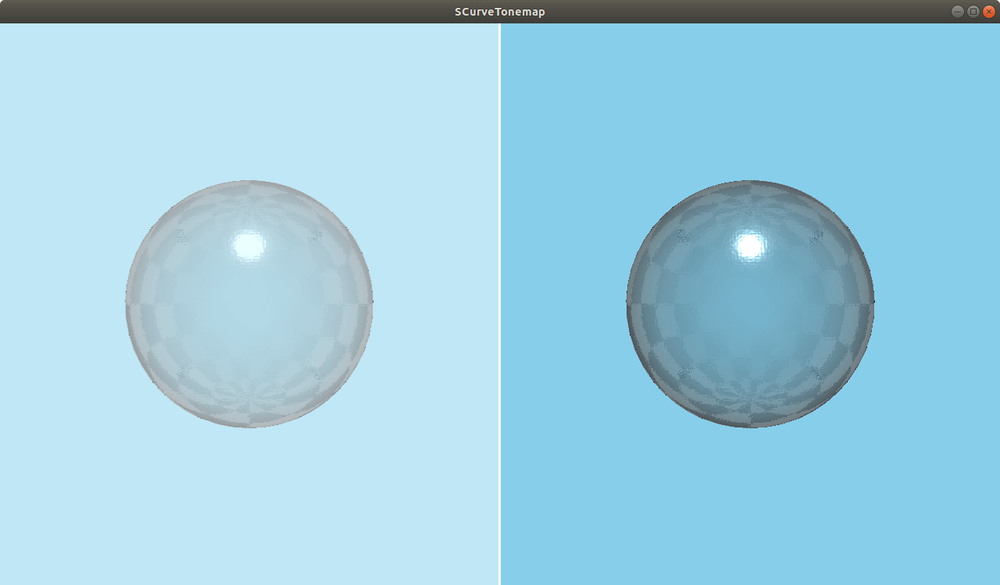
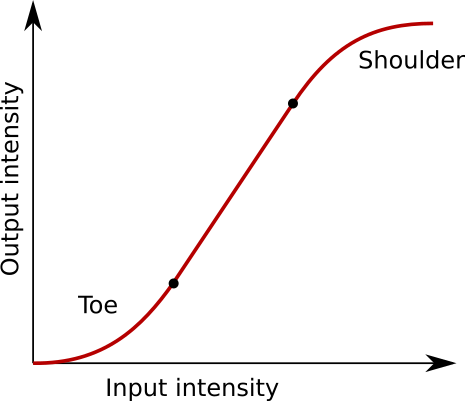

SCurveTonemap QML Type
A tonemapping effect. More...
| Import Statement: | import QtQuick3D.Effects 6.7 |
| Status: | Deprecated since 6.5 |
This type is deprecated since QtQuick3D.Effects 6.5. We strongly advise against using it in new code.
Properties
- contrastBoost : real
- exposureValue : real
- gammaValue : real
- saturationLevel : real
- shoulderEmphasis : real
- shoulderSlope : real
- toeEmphasis : real
- toeSlope : real
- useExposure : bool
- whitePoint : real
Detailed Description
Use ExtendedSceneEnvironment instead.
Warning: All pre-made standalone effects in QtQuick3D.Effects are considered deprecated starting with Qt 6.5. To control tonemapping, use ExtendedSceneEnvironment instead.

The SCurveTonemap effect maps the luminance of each pixel in the Scene according to an s-shaped curve:

The curve has three parts. The toe area determines the shadows, and is governed by toeSlope and toeEmphasis. The middle part determines overall contrast, and is changed by contrastBoost. The shoulder area determines the highlights, and is governed by shoulderSlope and shoulderEmphasis.
Property Documentation
contrastBoost : real |
Enhances or reduces the overall contrast of the tonemap. This changes the slope of the middle part of the s-curve.
The range is [-1...2]. The default value is 0.
exposureValue : real |
Specifies the exposure for the tonemap effect. This value is only used if useExposure is true. The range is [0.01...16]. The default value is 1.
gammaValue : real |
Sets the gamma value for the tonemap effect. Sensible values are in the range [0.1...8]. The default value is 2.2.
saturationLevel : real |
Sets the overall saturation level of the tonemap effect. The range is [0...2], with 0 being fully grayscale and 2 being very oversaturated. The default value is 1.
shoulderEmphasis : real |
Modifies the shape of the shoulder part of the s-curve. The range is [-1...1]. The default value is 0.
See also shoulderSlope.
shoulderSlope : real |
Sets the slope of the shoulder part of the s-curve. The shoulder defines where highlights lose contrast.
The range is [0...3]. The default value is 1.
See also shoulderEmphasis.
toeEmphasis : real |
Modifies the shape of the toe part of the s-curve. The range is [-1...1]. The default value is 0.
See also toeSlope.
toeSlope : real |
Sets the slope of the toe part of the s-curve. The toe defines where shadows lose contrast.
The range is [0...3]. The default value is 1.
See also toeEmphasis.
useExposure : bool |
Makes the effect use whitePoint instead of exposureValue for luminance calculations. The default value is false.
whitePoint : real |
Sets the white point of the tonemap. This value is only used if useExposure is false. The range is [0.01...128]. The default value is 1.